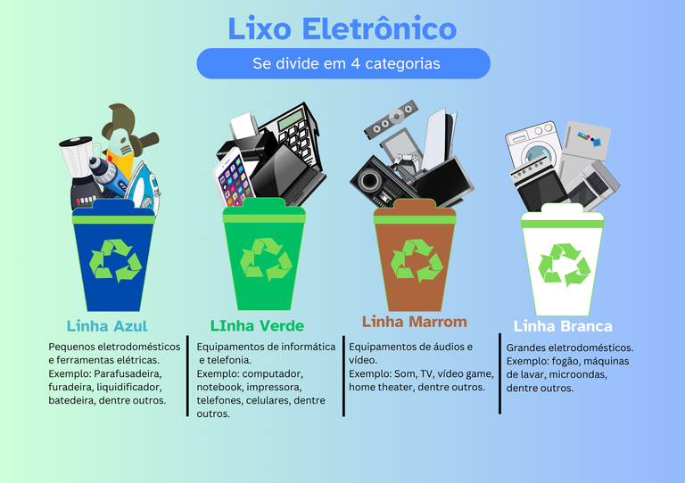
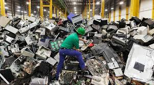

Recycle_Tech
O lixo eletrônico, também conhecido como e-lixo, é composto por dispositivos eletrônicos descartados, como celulares, computadores, baterias e televisores. Com o avanço da tecnologia e o consumo acelerado, a quantidade de lixo eletrônico cresceu exponencialmente na última década. Os prejuízos causados por esse descarte inadequado são alarmantes. Metais pesados como mercúrio e chumbo contaminam solos e águas, afetando a biodiversidade e a saúde humana. Além disso, a extração de matéria-prima para a produção de novos dispositivos aumenta o impacto ambiental. Segundo relatórios ambientais, toneladas de resíduos eletrônicos foram descartadas sem controle adequado, agravando o problema.
A reutilização do lixo eletrônico é essencial para reduzir impactos ambientais. Componentes eletrônicos podem ser reaproveitados para consertar outros dispositivos, enquanto partes recicláveis, como cobre e ouro, podem ser extraídas para reutilização na indústria. Além disso, o lixo eletrônico pode se tornar uma fonte de renda. Uma das formas é a revenda de peças funcionais para técnicos e empresas de manutenção. Outra possibilidade é a criação de projetos de reciclagem, onde componentes são coletados e revendidos para a indústria, gerando empregos e contribuindo para a economia circular.
 Rykelme M.
Rykelme M.